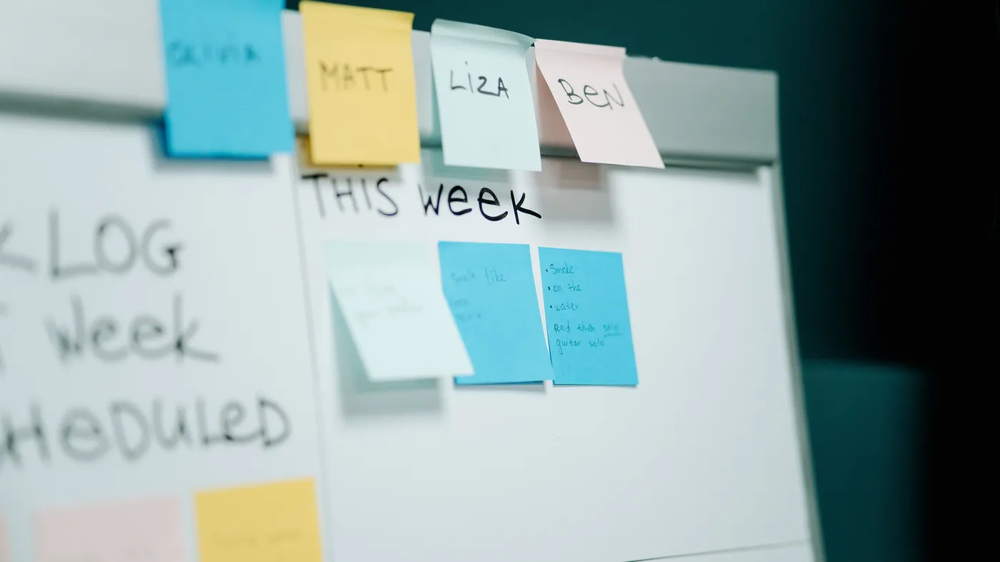

A room full of CIOs agreed on one unglamorous point: redesign the work before you hand it to an agent. You can do that without a six-month consulting project, and the build itself can do most of the finding.
CIO.com wrote up the CIO 100 Leadership Live event in Boston, where panelists and an active audience argued about what companies should become as AI starts acting on its own. Much of it was big-picture: stop counting returns one agent at a time, treat AI spending like a venture portfolio, share ownership between business and technology teams, and judge the whole effort on revenue, customer experience and resilience rather than on isolated productivity gains.
The most useful line in the write-up was also the plainest. Leaders were urged to simplify and redesign operations before automating them, because the complexity piled up in legacy systems is what slows AI down. You need to understand a process in detail before you can decide which parts to automate and which parts to help a person do better.
Most support processes were never designed. They grew. A refund over a certain amount goes to a spreadsheet that someone emails to finance on Thursdays. A warranty claim needs a check in a system that was retired two years ago, so an agent opens a second screen and copies a number across. Every case from one region lands with the same senior person, because nobody else remembers the rule.
Put an AI agent on top of that and it does one of two things. It copies the workaround faithfully, so you now pay for software to repeat a step that should have been deleted. Or it trips over the exception nobody wrote down and gives a customer a confident wrong answer. Either way the project looks like an AI failure when it is really a process failure, and the budget for the next attempt gets harder to win.
The panel's portfolio idea depends on this too. Small bets you can stop quickly only work when each bet is cheap to build and cheap to kill. A bet built on a tangled process is neither.

Building a flow on a visual canvas is a process audit you were going to need anyway. Every branch has to become a real condition. Each handoff has to become a node with a named owner. The step that exists only because of a retired system shows up as a box with nothing worth keeping going in or out, and you can see it before anyone writes a prompt.
CX-Builder also gives you a way to find the parts you cannot see on a whiteboard. Put a human-in-the-loop review at the point in the process nobody can explain cleanly. The agent handles the clear cases and holds the murky ones for a person, who approves or corrects them with a short reason. After a few weeks, that queue of held cases is a list of exactly where your process is unclear, written by the people who know.
Reuse, another of the panel's points, follows from there. Retrieval over your policy documents and the connections to your ticketing and order systems get built once. The second process you clean up and automate starts with those pieces already in place, which is what keeps each new bet small.
One agentflow per process, kept deliberately small. A document store holds the current policy, which forces someone to decide which version is current. Rules that can be stated plainly become condition nodes rather than instructions buried in a prompt. A human approval step sits at the ambiguous decision, and each reviewer's call and reason is logged. Once the log shows which rules people apply every time, you write those down, delete the steps nobody defends, and widen what the agent handles on its own.
The order matters. Clean the step, then automate it, then look at the next one.
Pick one process you plan to automate this quarter. Before anything gets built, have the person who runs it walk through it step by step and label each step: required by a rule, required by a system, or "we have always done it this way." Cut the third group first, then build what is left, with a review step wherever the second group still leaves you guessing.